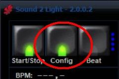
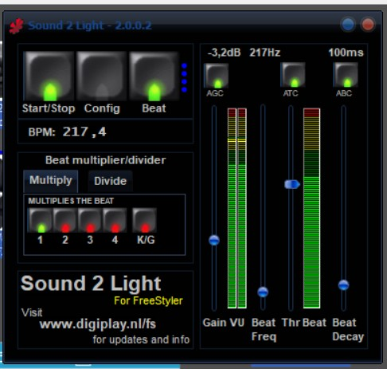
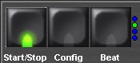
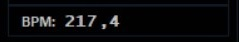
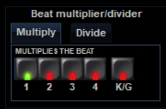
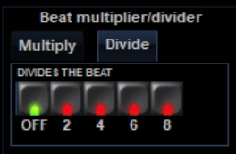
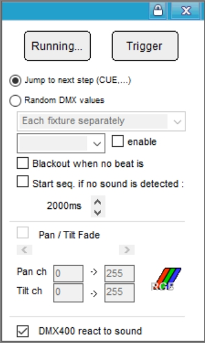

Sound to Light interface 2.x
Sound 2 Light is an add-on to Freestyle, created by remco_k, which as the name says , makes an audio interface to FreeStyler.
It processes an audio signal into a beat triggered signal which can be used control various FreeStyler functions.
More info can be found here on the original page. See: Sound to Light Interface
Sound 2 Light is by default installed with FreeStyler and can be opened here.

If not installed then it can downloaded here. http://www.digiplay.nl/fs, where also more information can be found.
Sound2Light is a plugin which takes an analog input signal and convert it to a beat / program control signal for FreeStyler.
As this uses an analog input signal there are some considerations which are to be taken into account to get a god performance.
Lousy input, lousy output.
Considerations.
There are more input possibilities and one of them is the microphone input on the PC.
This is probably the worst signal to use as this pickup and noises signal which nothing to do with the beat we want detect.
So this input signal are in general to be avoided as input signal.
The better one is a line signal from the mixer to the PC.
Audio signal considerations.
Setting up / configure the Sound 2 light.
Before starting the Sound2Light you need to configure it.
To open the config window press the “Config” button.

Sound to Light interface 2.x - Configuration
Main Panel
Analyzer Control.

In the right side we have the analyzer control with the following options.
AGC – Automatic Gain Control: As the name says Automatic Gain Control.
ATC - Auto Threshold Control: This can help for better beat detection. Default: Off, can be switched on.
ABC - Auto Beat decay Control: For an automatic more stable beat trigger output. This control works with info from the BPM counter. Default: Off, can be switched on.
These controls can also manually be set with the sliders.
Gain: Set the audio level.
Beat Freq: Set a filter for the beat frequency you want to detect.
Thr: Threshold sets the level where beat is detected.
Beat Decay: This parameter sets the pause time after a beat before the next can be detected. This gives a more stable beat detection.
On the two meters it is possible to see the audio signal and the beat filtered signal
Main Control.
In the left side we have the main control.

Start/Stop: Activate (green light)/deactivate (red light) the beat detection.
Config: See the Config section
Beat: Indicates with the light when a beat is detected. Furthermore, pressing this button will send a beat trigger to FreeStyler.
The 4 blue lights: The 4 blue lights (LED's) or dot is showing the status for the multiplier/divider when one of these feature and the beat detecting is activated.

BPM counter: As the name says Beats Per Minutes.
Beat multiplier/divider
It is possible to set if audio beat are to be multiplied or divided when it is send as trigger signal to FreeStyler.
Multiply:

Defaule is 1 which means the 1 audio beat generates 1 trigger signal to FreeStyler.
It is possible to set the multiplication to 2, 3 or 4. This means that it is possible to generate example 2 trigger signals to FreeStyler per 1 audio beat.
This makes it possible to step a sequence more steps in between two audio beats.
K/G: Keep on Going enabled will give that the trigger signals is send to FreeStyler even if no audio beat detected.
Divide:

It is also possible to divide the audio beat into a slower trigger signal to FreeStyler.
In this way it is possible to step a sequence for example on each 2nd audio beat.
It is possible to divide the audio beat with 2, 4, 6 or 8
Note: It is not possible to use Multiply and Divide at the same time.
{kind=link}
{kind=link}
{kind=link}
{kind=link}
{kind=link}
{kind=link}
FreeStyler Sound configuration
Sound2light is an external add-on to FreeStyler and FreeStyler has it’s own configuration which need to be set.

There are basically two way the beat trigger can be used to control FreeStyler.
Jump to next scene: Controls running sequences and the DMX400 chaser.
To use Jump to next scene to control DMX400 the check box in the bottom of the panel must be checked “ON”
Random DMX value: This generates random values direct to the fixture on the following channels: gobo, color, pan & tilt.
Buttons:
The two buttons ”Running”, Run / Pause the beat signal from the Sound2Light beat trigger and the “Trigger” button makes it possible for you to manually trigger a step.
Note: These functions are a part of FreeStyles and the same functionality in the Sound2Light add-on are a part of the add-on.
Jump to next scene:
When you are using this mode you can control the scene / step shift in your sequences by the beat from the Sound2Light programmer.
Each beat will trig the chosen sequence to go to next step.
For more info of how to setup the Cue window to react on sound. See Sound2Light configure the cue window..
Random DMX value:
In this modes fixtures enabled to react to sound will be controlled by the sound to light control in freestyler.
The sound to light control generates a random value for following fixture channels: gobo, color (colorwheel and RGB), pan & tilt.
You also need to enable the wanted fixtures to react to the sound.
For more info see Random DMX values setup.
{kind=link}